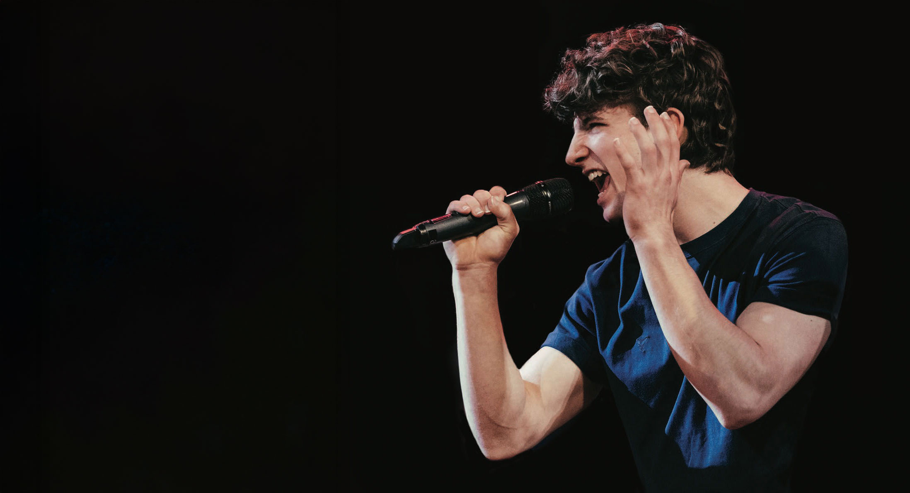

Dylan Mills is an aspiring musical theater performer from North Reading, a town just outside of Boston, MA. Early on, he discovered that his love for gymnastics could be incorporated into musical theater and he never looked back. Dylan has spent the past eight years honing his craft in singing, acting, and dancing, as well as picking up a few new skills here and there (like trapeze and boxing). Overtime, he has developed a passion for physical theater and pushing himself outside of his comfort zone. Most of his performance time has been spent on the stage of his high school and local theaters, but is he is eager to expand his horizons. He is currently pursuing these goals as a student at Syracuse University, engaging in student-run productions and courses taught by esteemed faculty. Outside of theater, Dylan enjoys spending time outdoors, travelling, and expanding Artificial Intelligence research on the SU campus.

April 3rd - 5th

© 2025 - All Rights Reserved